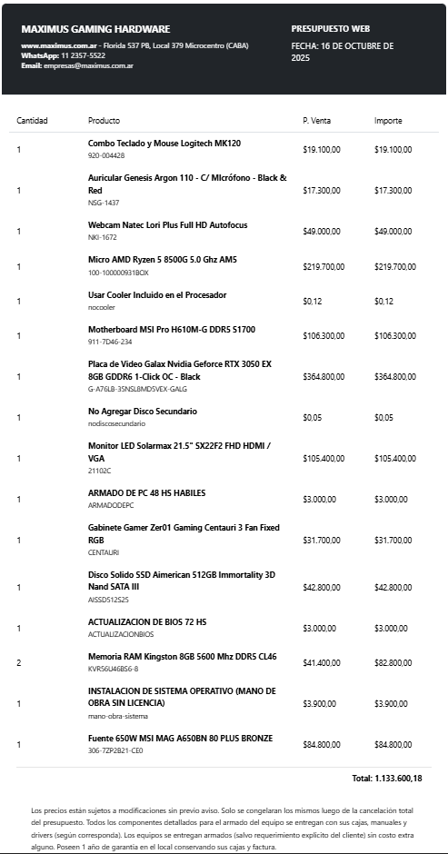
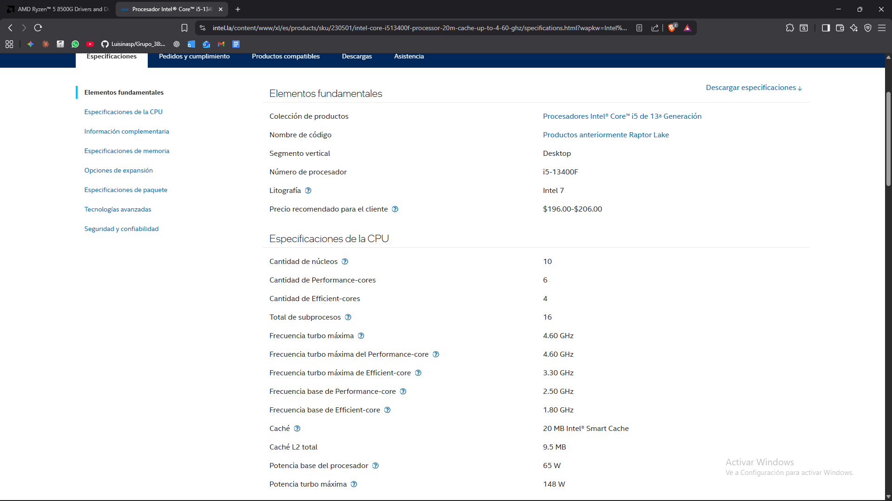
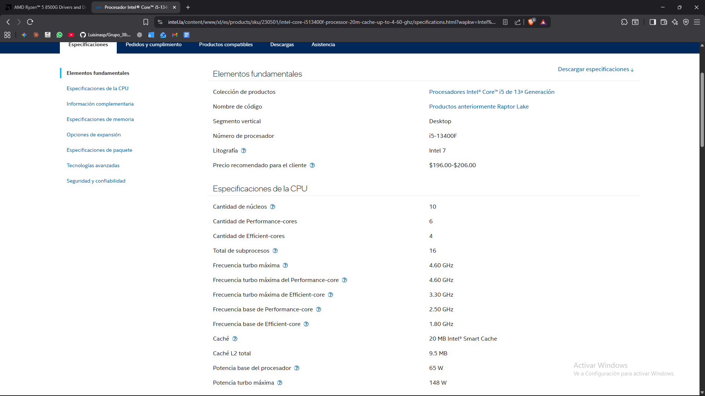

Presupuesto principal (Maximus)
Fuente principal: https://www.maximus.com.ar/
Considerando el presupuesto de $1000 dólares equivalente a $1.450.000 ARS (con la cotización del día de hoy 16/10/2025).
Fuente principal: https://www.maximus.com.ar/

A continuación, se agregan dos productos más teniendo en cuenta la conexión de internet y los posibles cortes de luz durante el streaming.
Fuente: https://altport.com.ar/
Por último, se tiene en cuenta el precio de la licencia del sistema operativo elegido, que en este caso es Windows ($200.900 ARS).
Referencia: Página oficial de Microsoft
Dando en total un monto de $1.444.744,18.
Se eligió por ser un procesador de última generación (AM5) con una excelente relación precio/rendimiento. Sus 6 núcleos y 12 hilos a 5.0 GHz son suficientes para ejecutar el juego y el software de streaming (OBS Studio) simultáneamente. Además, su arquitectura moderna garantiza una mayor vida útil de la plataforma.
Alternativa descartada: Intel Core i3 de última generación (ej: i3-14100F).
Se descartó porque el Ryzen 5 ofrece una mayor cantidad de núcleos (6 vs 4 del i3), lo que es clave para la codificación de video en tiempo real que requiere el streaming.
Para la alternativa Intel se menciona MSI Pro H610M-G DDR5 (socket S1700). Para la elección final con Ryzen 5 8500G se usa plataforma AM5 con memoria DDR5, priorizando un modelo de entrada que cubre funciones esenciales y mantiene el presupuesto.
Alternativa descartada: placa madre B650 (AM5).
Se descartó una placa de mayor gama (overclock, más puertos) para priorizar la inversión en la GPU y cumplir el presupuesto.
Configuración dual channel recomendada para gaming + streaming simultáneo. Aprovecha la plataforma AM5 y evita cuellos de botella de memoria.
Alternativa descartada: 1×16 GB 5600 MHz DDR5 (single channel).
Se descartó porque el dual channel ofrece mayor ancho de banda con diferencia mínima de precio.
Componente clave por el codificador NVENC de Nvidia, que permite streamear con alta calidad y mínimo impacto en FPS.
Alternativa descartada: AMD Radeon RX 6500 XT o 6600.
Aunque la RX 6600 puede rendir algo mejor en juegos por precio, su codificador (VCE/VCN) no iguala la eficiencia y calidad de NVENC para streamers principiantes.
El SSD es esencial para arranque y cargas rápidas del sistema operativo, el juego y OBS Studio.
Alternativa descartada: HDD de 1 TB.
Se descartó por la gran diferencia de velocidad, inaceptable en una PC moderna para streaming.
Fuente certificada 80 PLUS BRONZE de 650 W para eficiencia y estabilidad. Ofrece margen para futuras expansiones.
Alternativa descartada: fuente genérica sin certificación.
Se descartó por riesgo de fallos e incluso daño a componentes.
Conclusión: 8 GB alcanzan para jugar, pero quedan cortos al sumar OBS y Windows. Recomendado 16 GB para evitar stuttering y caídas de FPS.
Conclusión: con iGPU se puede a 720p con compromisos. La RTX 3050 se justifica por NVENC para 1080p60 consistente y margen a futuro.
NVENC de Nvidia es como un ayudante dedicado a “empaquetar” el video del stream. Así, la CPU se concentra en el juego y el stream mantiene calidad sin perder FPS.

Validaciones con fuentes oficiales y fichas técnicas:

 

La IA ayudó a comparar componentes, entender NVENC y priorizar presupuesto (RAM, CPU vs GPU). Para precios en ARS y stock local, se validó manualmente en tiendas.
Se prefiere búsqueda manual para: precios actualizados, disponibilidad local, reviews/benchmarks detallados y garantías/financiación.
Información incompleta detectada se resolvió consultando documentación de OBS y fuentes técnicas oficiales.